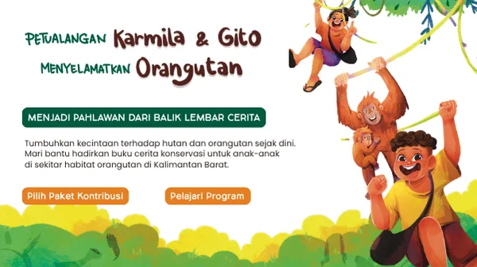
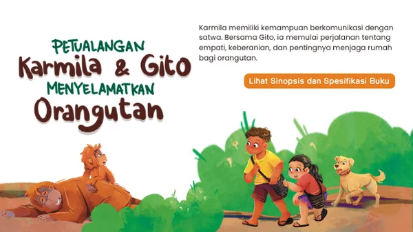

Fundraising campaign
Karmila & Gito
Satu buku, satu cerita, dan satu langkah nyata untuk menjaga orangutan tetap hidup di habitatnya.
Dukung sekarang
Your impact
Setiap dukungan punya arti.

The story
Kenalan dengan Karmila dan Gito.
Buku ini mengajak anak-anak mengenal kehidupan orangutan melalui cerita yang hangat, ilustrasi, dan pesan untuk merawat hutan.
Pelajari programPre-order batch
Pilih paket dukunganmu.
Pesan buku sekaligus ikut membantu perjalanan konservasi.
Paket A
Buku Karmila & Gito
Satu buku cerita untuk dibaca, dibagikan, dan dikenalkan kepada lebih banyak anak.
Rp150.000Pilih paket
Paket B
Buku + dukungan konservasi
Paket pilihan untuk mendukung edukasi dan perlindungan habitat orangutan.
Rp250.000Pilih paket
FAQ
Pertanyaan yang sering ditanyakan.
Ke mana dukungan saya disalurkan?
Dukungan digunakan untuk produksi buku, edukasi, dan aktivitas konservasi yang dijelaskan dalam campaign.
Kapan buku dikirim?
Buku dikirim sesuai jadwal batch pre-order yang dipilih saat checkout.
Apakah bisa membeli lebih dari satu paket?
Bisa. Tambahkan paket lain sebelum menyelesaikan pesanan.
A small step matters